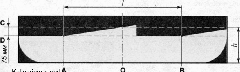
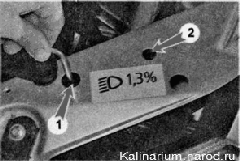

Регулировка света фарДля выполнения работы потребуется помощник, а также: — ровная горизонтальная площадка (желательно возле стены дома, забора или ворот); — рулетка длиной 5 м; — лист картона (чтобы прикрыть фару при регулировке). Регулировку желательно выполнять в темное время суток. Автомобиль должен быть в снаряженном состоянии (полностью заправлен и без дополнительного груза). Таккакнайти подходящую поверхность в качестве экрана непросто, проще для этого использовать фанерный щит размером 1x2 м с нанесенной на него разметкой. При этом необходимо подготовить упор или подставку, чтобы установить щит вертикально. Последовательность выполнения 
Схема разметки экрана для регулировки света блок-фар: А — вертикальная лшшя, обозначающая расположение центра лампы ближнего света левой блокфары; В — вертикальная линия, обозначающая расположение лампы ближнего свега правой блок-фары; С — горизонтальная линия, обозначающая расположение ламп ближнего/дальнего света фар; D — линия, обозначающая высоту подъема горизонтальной границы пучков света; О — осевая линия; I — расстояние между ламнами ближнего света блок-фар; h — расстояние от поверхности площадки на которой установлен автомобиль до центра ламп ближнего света фар 1. Устанавливаем автомобиль на ровную горизонтальную площадку перпендикулярно поверхности, выбранной в качестве экрана, и на расстоянии 5 м от нее. 2. Размечаем экран согласно рисунку. Необходимые замеры можно сделать с помощью рулетки. 3. Проверяем давление в шинах, при необходимости доводим его до нормы. 4. Поворачиваем ручку привода элктрокорректора фар в положение О, соответствующее минимальной загрузке автомобиля. 5. Помощник садится на сиденье водителя. После чего энергично качаем автомобиль сбоку для самоустановки подвески. 6. Включив ближний свет фар, закрываем листом картона одну из блок-фар, например правую. 7. Шестигранным ключом на 6 мм вращая регулировочный винт 1 левой блок-фары, подводим горизонтальную границу пучка света к линии D, а затем, вращая регулировочный винт 2, совмещаем излом границы пучка света с линией А. Аналогично регулируем правую фару. |